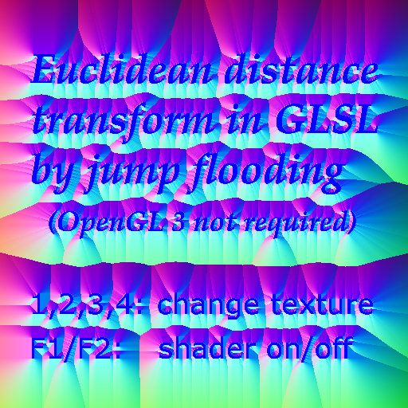

Demo of jump flooding algoritm for EDT using GLSL Author: Stefan Gustavson (stefan.gustavson@gmail.com) 2010-08-24. This code is in the public domain.
Adapted to vispy by Eric Larson <larson.eric.d@gmail.com>.
This version is a vispy-ized translation of jfa_translate.py.
Note
This example is based on vispy.gloo and thus uses GLSL
shading code, which is executed at the GPU and is
defined as multiline strings.
import numpy as np
from os import path as op
import sys
from vispy import app
from vispy.gloo import (Program, FrameBuffer, VertexBuffer, Texture2D,
set_viewport)
from vispy.io import load_data_file, imread
this_dir = op.abspath(op.dirname(__file__))
class Canvas(app.Canvas):
def __init__(self):
self.use_shaders = True
app.Canvas.__init__(self, size=(512, 512), keys='interactive')
# Note: read as bytes, then decode; py2.6 compat
with open(op.join(this_dir, 'vertex_vispy.glsl'), 'rb') as fid:
vert = fid.read().decode('ASCII')
with open(op.join(this_dir, 'fragment_seed.glsl'), 'rb') as f:
frag_seed = f.read().decode('ASCII')
with open(op.join(this_dir, 'fragment_flood.glsl'), 'rb') as f:
frag_flood = f.read().decode('ASCII')
with open(op.join(this_dir, 'fragment_display.glsl'), 'rb') as f:
frag_display = f.read().decode('ASCII')
self.programs = [Program(vert, frag_seed),
Program(vert, frag_flood),
Program(vert, frag_display)]
# Initialize variables
# using two FBs slightly faster than switching on one
self.fbo_to = [FrameBuffer(), FrameBuffer()]
self._setup_textures('shape1.tga')
vtype = np.dtype([('position', 'f4', 2), ('texcoord', 'f4', 2)])
vertices = np.zeros(4, dtype=vtype)
vertices['position'] = [[-1., -1.], [-1., 1.], [1., -1.], [1., 1.]]
vertices['texcoord'] = [[0., 0.], [0., 1.], [1., 0.], [1., 1.]]
vertices = VertexBuffer(vertices)
for program in self.programs:
program.bind(vertices)
self._timer = app.Timer('auto', self.update, start=True)
self.show()
def _setup_textures(self, fname):
data = imread(load_data_file('jfa/' + fname))[::-1].copy()
if data.ndim == 3:
data = data[:, :, 0] # Travis gets 2, I get three?
self.texture_size = data.shape[:2]
self.orig_tex = Texture2D(data, format='luminance', wrapping='repeat',
interpolation='nearest')
self.comp_texs = []
data = np.zeros(self.texture_size + (4,), np.float32)
for _ in range(2):
tex = Texture2D(data, format='rgba', wrapping='clamp_to_edge',
interpolation='nearest')
self.comp_texs.append(tex)
self.fbo_to[0].color_buffer = self.comp_texs[0]
self.fbo_to[1].color_buffer = self.comp_texs[1]
for program in self.programs[1:2]:
program['texw'], program['texh'] = self.texture_size
def on_draw(self, event):
if self.use_shaders:
last_rend = 0
self.fbo_to[last_rend].activate()
set_viewport(0, 0, *self.texture_size)
self.programs[0]['texture'] = self.orig_tex
self.programs[0].draw('triangle_strip')
self.fbo_to[last_rend].deactivate()
stepsize = (np.array(self.texture_size) // 2).max()
while stepsize > 0:
self.programs[1]['step'] = stepsize
self.programs[1]['texture'] = self.comp_texs[last_rend]
last_rend = 1 if last_rend == 0 else 0
self.fbo_to[last_rend].activate()
set_viewport(0, 0, *self.texture_size)
self.programs[1].draw('triangle_strip')
self.fbo_to[last_rend].deactivate()
stepsize //= 2
self.programs[2]['texture'] = self.comp_texs[last_rend]
else:
self.programs[2]['texture'] = self.orig_tex
set_viewport(0, 0, *self.physical_size)
self.programs[2].draw('triangle_strip')
def on_key_press(self, event):
if event.key is not None and event.key.name in '1234':
fname = "shape%s.tga" % event.key.name
self._setup_textures(fname)
elif event.key == 'F1':
self.use_shaders = True
elif event.key == 'F2':
self.use_shaders = False
def fun(x):
c.title = 'FPS: %0.1f' % x
if __name__ == '__main__':
c = Canvas()
c.measure_fps(callback=fun)
if sys.flags.interactive != 1:
c.app.run()